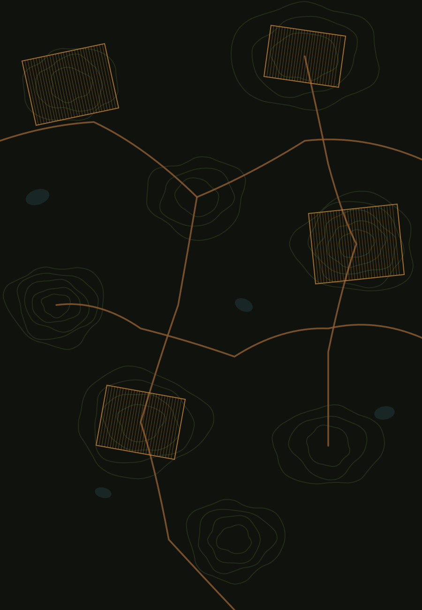

Plataforma de Gestão Agrícola Integrada e Agrofloresta — culturas, áreas, estufa, galinhas, armazém e finanças, tudo num só sítio.
Introduz as tuas credenciais para aceder à plataforma.
O acesso é feito por convite — se ainda não tens conta, fala com quem geriu a subscrição da tua propriedade.